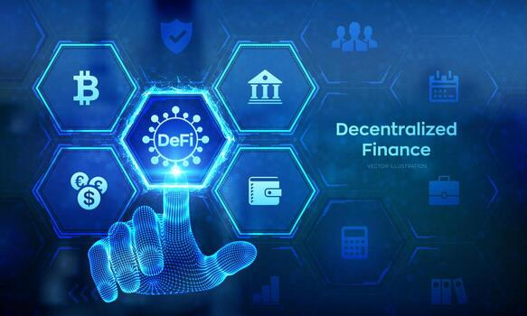

What is Web 3.0?
Web 3.0 is the next evolution of the Internet, built on the principles of decentralisation, openness, and greater user control. It aims to create a web where data is interconnected in a meaningful way, machines can understand and interpret content, and users have true ownership of their digital assets and identity.
The concept was first introduced by Tim Berners-Lee as the "Semantic Web" — a web where data has meaning that computers can process intelligently.
Key Characteristics of Web 3.0
- Decentralisation — no single authority controls the network
- Semantic Web — machines can understand the meaning of data
- Blockchain technology — enables trustless, transparent transactions
- User ownership — users control their own data and digital assets
- AI integration — intelligent, personalised web experiences
- Interoperability — seamless data sharing across platforms
Key Technologies of Web 3.0
- Blockchain — a distributed ledger for secure, transparent record-keeping
- Smart Contracts — self-executing agreements coded on the blockchain
- Cryptocurrencies — digital currencies like Bitcoin and Ethereum
- NFTs — non-fungible tokens representing ownership of digital assets
- Decentralised Apps (dApps) — applications running on blockchain networks
Web 3.0 vs Web 2.0
💡 In Web 2.0, companies like Google and Facebook own and control your data. In Web 3.0, you own your data through cryptographic keys — no central authority can access, sell, or delete it without your permission.
Challenges of Web 3.0
Web 3.0 is still emerging and faces significant challenges including scalability, energy consumption, regulatory uncertainty, complexity for average users, and the risk of new forms of centralisation forming around dominant blockchain platforms.